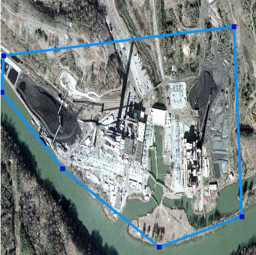
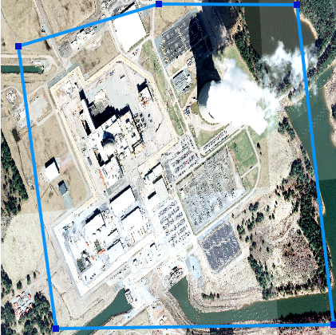
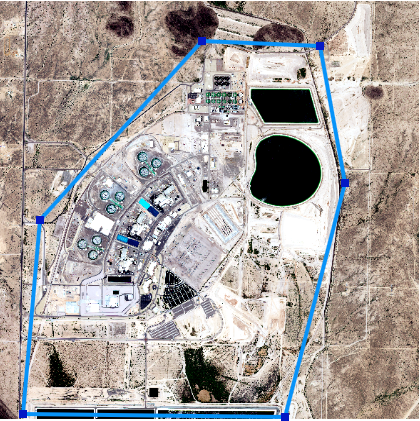
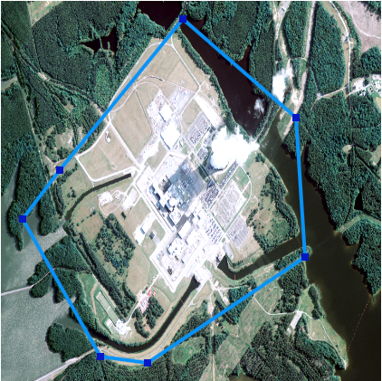
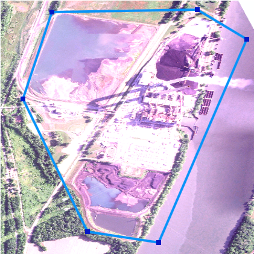

Power plants |
Identification
What does a power plant look like?
There are many types of power plants. From hydroelectric dams to coal power plants to nuclear, we would like you to annotate all of them. While there are differences between these types, there are also similarities. Some things to look for are:
- smokestacks
- cooling towers
- large bodies of water connected
- substations on a complex
- power lines leaving a complex
The images you are annotating are selected so that power plants should be in the middle of the image. Accordingly, you should start your search in the middle of the image. The power plant might not be in the middle, and some images may not have a power plant at all. This is okay! If the power plant is not centered, just annotate it wherever it is, and if you are sure there is no power plant, just hit submit with no annotations.
Examples
Below are some examples of annotated power plants






Frequently Asked Questions
- What if a power plant is on the edge of this image?
- What parts of a power plant should I label?
- What if there is no power plant in this image?
- Draw a polygon around the parts that you can see.
- All of it! Please enclose the whole power plant in a polygon. This includes things like coal piles and water intakes (e.g., a canal cut from a lake leading to the plant, not the whole lake).
- Just submit the hit with no annotations marked.